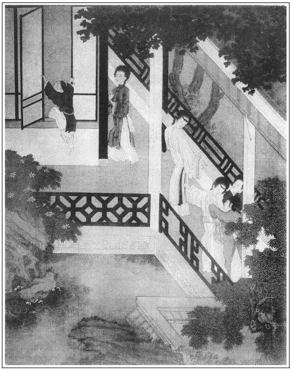

張回此回是金蓮、玉樓、瓶兒、春梅四人相聚後，同時加一番描寫也。玉樓為作者特地矜許之人，故寫其冷，而不寫其淫。春梅又為作者特地留為後半部之主腦，故寫其寵，而亦不寫其淫。至於瓶兒、金蓮，固為同類，又發深淺，故翡翠軒尚有溫柔濃艷之雅，而葡萄架則極妖淫污辱之怨。甚矣，金蓮之見惡於作者也！
內以一月琴貫「翡翠」、「葡萄」二事，信乎玉樓之一人又為金、瓶二人之針線也。
必特寫四人一番，蓋四人皆作者用意特寫之人。且四人者，一部之骨子也，故用描寫一番。
內必用西門惱金蓮一段，已伏後妒寵之根，幾番怒罵之由，見瓶兒之獨寵也。
凡各回內清曲小調，皆有深意，切合一回之意。惟此回內「赤帝當權」則關係全部，言其炎熱無多，而煞尾二句，已明明說出矣。
人知此回伏生子，不知其於「掃雪」一回已伏生子之根矣。此處又明照出，亦如大丫頭已出春梅，叉子薛媒婆口中再明說出。此是筆法暗對處。
內寫西門，心知金蓮妒寵爭妍，而不能化之，乃以色慾奈何之，如放李子不即入等情。自是引之入地獄，己亦隨之敗亡出醜，真小人之家法也。
《梁州序》上半截寫玉樓、瓶兒，下半寫春梅、金蓮。然玉樓自有一腔心事寄在月琴，是身與會而心不然者。春梅又有一種心高志大，不肯抱阮作窮途之哭者，然則比日翡翠軒、葡萄架，惟李潘二人各立門戶，將來不復合矣。
詞曰：
錦帳鴛鴦，繡衾鸞鳳。一種風流千種態：看香肌雙瑩，玉簫暗品，鸚舌偷嘗。屏掩猶斜香冷，回嬌眼，盼檀郎。道千金一刻須憐惜，早漏催銀箭，星沉網戶，月轉迴廊。
──右調《好女兒》

話說來保正從東京來，在卷棚內回西門慶話，具言：「到東京先見稟事的管家，張旁先使雲峰隱現。下了書，然後引見。太師老爺看了揭帖，把禮物收進去，交付明白。老爺吩咐：不日寫書，馬上差人下與山東巡按侯爺，把山東滄州鹽客王霽雲等一十二名寄監者，盡行釋放。翟叔多上覆爹：老爺壽誕六月十五日，好歹教爹上京走走，他有話和爹說。」這西門慶聽了，滿心歡喜，旋即使他回喬大戶話去。只見賁四、來興走來，見西門慶和來保說話，立在旁邊。來保便往喬大戶家去了。西門慶問賁四：「你每燒了回來了？」那賁四不敢言語。來興兒向前，附耳低言說道：「宋仁走到化人場上，攔著屍首，不容燒化，聲言甚是無禮，小的不敢說。」這西門慶不聽萬事皆休，聽了心中大怒，罵道：「這少死光棍，這等可惡！」即令小廝：「請你姐夫來寫帖兒。」就差來安兒送與李知縣。隨即差了兩個公人，一條索子把宋仁拿到縣裡，反問他打綱詐財，倚屍圖賴。繡旁公論。當廳一夾二十大板，打的鮮血順腿淋漓。寫了一紙供狀，再不許到西門慶家纏擾。並責令地方火甲，眼同西門慶家人，即將屍燒化訖。那宋仁打的兩腿棒瘡，歸家著了重氣，害了一場時疫，不上幾日，嗚呼哀哉死了。正是：
失曉人家逢五道，溟泠饑鬼撞鐘馗。
西門慶剛了畢宋蕙蓮之事，就打點三百兩金銀，交顧銀率領許多銀匠，在家中卷棚內打造蔡太師上壽的四陽捧壽的銀人，每一座高尺有餘。又打了兩把金壽字壺。尋了兩副玉桃杯、兩套杭州織造的大紅五彩羅緞紵絲蟒衣，只少兩疋玄色焦布和大紅紗蟒，一地裡拿銀子尋不出來。李瓶兒道：「我那邊樓上還有幾件沒裁的蟒，等我瞧去。」繡旁映前有情。西門慶隨即與他同往樓上去尋，揀出四件來：兩件大紅紗，兩件玄色焦布，俱是織金蓮五彩蟒衣，比織來的花樣身份更強幾倍，把西門慶歡喜的要不的。於是打包，還著來保同吳主管五月二十八日離清河縣，上東京去了，不在話下。
過了兩日，卻是六月初一日，天氣十分炎熱。到了那赤鳥當午的時候，一輪火傘當空，無半點雲翳，真乃爍石流金之際。有一詞單道這熱：
祝融南來鞭火龍，火雲焰焰燒天空。
日輪當午凝不去，萬國如在紅爐中。
五嶽翠干雲彩滅，陽侯海底愁波渴。
何當一夕金風發，為我掃除天下熱。
這西門慶近來遇見天熱，不曾出門，在家撒發披襟避暑。繡旁受用。張夾將西門一頓，下好放手寫三妾及春梅也。在花園中翡翠軒卷棚內，張夾直出翡翠軒。看著小廝每打水澆花草。只見翡翠軒正面栽著一盆瑞香花，開得甚是爛漫。西門慶令來安兒拿著小噴壺兒，看著澆水。只見潘金蓮和李瓶兒家常都是白銀條紗衫兒，密合色紗挑線縷金拖泥裙子。李瓶兒是大紅焦布比甲，金蓮是銀紅比甲。惟金蓮不戴冠兒，拖著一窩子杭州攆翠雲子網兒，露著四鬢，額上貼著三個翠面花兒，越顯出粉面油頭，朱唇皓齒。兩個攜著手兒，笑嘻嘻驀地走來。張夾先出二人。看見西門慶澆花兒，說道：「你原來在這裡澆花兒哩！怎的還不梳頭去？」張夾即從散發披襟四字文生來，文生情、情生妙絕。西門慶道：「你教丫頭拿水來，我這裡洗頭罷。」金蓮叫來安：「你且放下噴壺，去屋裡對丫頭說，教他快拿水拿梳子來。」來安應諾去了。金蓮看見那瑞香花，就要摘來戴。繡旁媚致。西門慶攔住道：「怪小油嘴，趁早休動手，我每人賞你一朵罷。」原來西門慶把旁邊少開頭，早已摘下幾朵來，浸在一隻翠磁膽瓶內。金蓮笑道：「我兒，你原來掐下恁幾朵來放在這裡，不與娘戴。」於是先搶過一枝來插在頭上。西門慶遞了枝與李瓶兒。只見春梅送了抿鏡梳子來，秋菊拿著洗面水。西門慶遞了三枝花，教送與月娘、李嬌兒、孟玉樓戴：「就請你三娘來，教他彈回月琴我聽。」張夾月琴。金蓮道：「你把孟三兒的拿來，等我送與他，教春梅送他大娘和李嬌兒的去。回來你再把一朵花兒與我──我只替你叫唱的，也該與我一朵兒。」張夾教玉樓來。卻先是支金蓮去。作者之巧妙如此。西門慶道：「你去，回來與你。」金蓮道：「我的兒，誰養的你恁乖！你哄我替你叫了孟三兒來，你卻不與我。我不去！你與了我，我才叫去。」西門慶笑道：「賊小淫婦兒，這上頭也掐個先兒。」於是又與了他一朵。金蓮簪於雲鬢之旁，繡眉金蓮之麗情嬌致，愈出愈奇，真可謂一種風流千種態，使人玩之不能釋手，掩卷不能去心。方才往後邊去了。
止撇下李瓶兒，張夾先寫瓶兒。西門慶見他紗裙內罩著大紅紗褲兒，日影中玲瓏剔透，露出玉骨冰肌，不覺淫心輒起。見左右無人，且不梳頭，把李瓶兒按在一張涼椅上，揭起湘裙，紅褌初褪，倒掬著隔山取火干了半晌，精還不洩。兩人曲盡「于飛」之樂。不想金蓮不曾往後邊叫玉樓去，走到花園角門首，張夾角門一。想了想，把花兒遞與春梅送去，張夾接出春梅。回來悄悄躡足，走在翡翠軒隔子外潛聽。繡眉寫出美人俏心。聽夠多時，張夾許多事情在此。聽見他兩個在裡面正幹得好，只聽見西門慶向李瓶兒道：「我的心肝，你達不愛別的，愛你好個白屁股兒。今日盡著你達受用。」良久，又聽的李瓶兒低聲叫道：「親達達，你省可的𢵞罷。奴身上不方便，我前番吃你弄重了些，把奴的小肚子疼起來，這兩日才好些兒。」西門慶因問：「你怎的身上不方便？」李瓶兒道：「不瞞你說，奴身中已懷臨月孕，繡眉瓶兒受孕，卻從此中點出，絕不平鋪直敘。張夾瓶兒生子，此處安根。望你將就些兒。」西門慶聽言，滿心歡喜，說道：「我的心肝，你怎不早說，既然如此，你爹胡亂耍耍罷。」於是樂極情濃，怡然感之，兩手抱定其股，一洩如注。婦人在下躬股承受其精。良久，只聞得西門慶氣喘吁吁，婦人鶯鶯聲軟，都被金蓮在外聽了。
正聽之間，只見玉樓從後驀地走來，便問：「五丫頭，在這裡做甚麼兒？」那金蓮便搖手兒。繡旁畫。兩個一齊走到軒內，慌的西門慶湊手腳不迭。問西門慶：「我去了這半日，你做甚麼？恰好還沒曾梳頭洗臉哩！」西門慶道：「我等著丫頭取那茉莉花肥皂來我洗臉。」金蓮道：「我不好說的，巴巴尋那肥皂洗臉，怪不的你的臉洗的比人家屁股還白！」繡旁尖甚。張夾舌上有刀。那西門慶聽了，也不著在意裡。落後梳洗畢，與玉樓一同坐下，因問：「你在後邊做甚麼？帶了月琴來不曾？」玉樓道：「我在後邊替大姐姐穿珠花來，到明日與吳舜臣媳婦兒鄭三姐下茶去戴。張夾忙中點後事。月琴春梅拿了來。」不一時，春梅來到，說：「花兒都送與大娘、二娘收了。」西門慶令他安排酒來。不一時冰盆內沉李浮瓜，涼亭上偎紅倚翠。玉樓道：「不使春梅請大姐姐？」西門慶道：「他又不飲酒，不消邀他去。」張夾放開月娘。當下西門慶上坐，三個婦人兩邊打橫。
正是：得多少──
壺斟美釀，盤列珍羞。
那潘金蓮放著椅兒不坐，只坐豆青磁涼墩兒。孟玉樓叫道：「五姐，你過這椅兒上坐，那涼墩兒只怕冷。」金蓮道：「不妨事，我老人家不怕冰了胎，張夾舌上有刀。怕甚麼？」繡旁偏說得巧。
須臾，酒過三巡，西門慶叫春梅取月琴來，張夾月琴一。教與玉樓，取琵琶，教金蓮彈：「你兩個唱一套『赤帝當權耀太虛』我聽。」張夾喻炎熱之無幾，且屬虛花也。金蓮不肯，說道：「我兒，誰養的你恁乖！俺每唱，你兩人到會受用快活，張夾已伏妒根。我不！也教李大姐拿了樁樂器兒。」繡眉即相如請秦王擊缶之意，一味不肯吃虧。西門慶道：「他不會彈甚麼。」金蓮道：「他不會，教他在旁邊代板。」西門慶笑道：「這小淫婦單管咬蛆兒。」一面令春梅旋取了一副紅牙象板來，教李瓶兒拿著。他兩個方才輕舒玉指，款跨鮫綃，合著聲唱《雁過沙》。丫鬟繡春在旁打扇。須臾唱畢，西門慶每人遞了一杯酒，與他吃了。潘金蓮不住在席上只呷冰水，或吃生果子。玉樓道：「五姐，你今日怎的只吃生冷？」金蓮笑道：「我老人家肚裡沒閒事，怕甚麼冷糕麼？」繡眉字字道破，不管瓶兒羞死。俏心毒口，可愛可畏。羞的李瓶兒在旁，臉上紅一塊白一塊。張夾白描。西門慶瞅了他一眼，說道：「你這小淫婦，單管只胡說白道的。」金蓮道：「哥兒，你多說了話。『老媽媽睡著吃干臘肉──是恁一絲兒一絲兒的』。張夾舌上有刀也。你管他怎的？」
正飲酒中間，忽見雲生東南，霧障西北，雷聲隱隱，一陣大雨來，軒前花草皆濕。正是：
江河淮海添新水，翠竹紅榴洗濯清。
少頃雨止，天外殘虹，西邊透出日色來。得多少：微雨過碧磯之潤，晚風涼落院之清。只見後邊小玉來請玉樓。玉樓道：「大姐姐叫，有幾朵珠花沒穿了，我去罷，惹的他怪。」李瓶兒道：「咱兩個一答兒裡去，奴也要看姐姐穿珠花哩。」西門慶道：「等我送你們一送。」於是取過月琴來，張夾月琴二。教玉樓彈著，西門慶排手，眾人齊唱：
[梁州序]向晚來雨過南軒，見池面紅妝零亂。漸輕雷隱隱，雨收雲散。但聞荷香十里，新月一鉤，此佳景無限。蘭湯初浴罷，晚妝殘。深院黃昏懶去眠。（合）金縷唱，碧筒勸，向冰山雪檻排佳宴。張夾冰山二字妙絕。清世界，幾人見？
又：
柳陰中忽噪新蟬，見流螢飛來庭院。聽菱歌何處？畫船歸晚。只見玉繩低度，朱戶無聲，此景猶堪羨。起來攜素手，整雲鬟。月照紗廚人未眠。（合前）
[節節高]漣漪戲綵鴛，綠荷翻。清香瀉下瓊珠濺。香風扇，芳草邊，閒亭畔，坐來不覺神清健。蓬萊閬苑何足羨！（合）只恐西風又驚秋，暗中不覺流年換。張夾二語真堪猛省。
眾人唱著不覺到角門首。張夾角門二。玉樓把月琴遞與春梅，張夾月琴三。和李瓶兒往後去了。繡旁一痕不亂。張夾描瓶兒處已完，玉樓處亦完。
潘金蓮遂叫道：「孟三兒，等我等兒，我也去。」才待撇了西門慶走，張夾要同去，卻是獨留。妙，妙。被西門慶一把手拉住了，說道：「小油嘴兒，你躲滑兒，我偏不放你。」拉著只一輪，險些不輪了一交。繡旁寫出又愛又惱。婦人道：「怪行貨子，他兩個都走去了，我看你留下我做甚麼？」西門慶道：「咱兩個在這太湖石下，取酒來，投個壺兒耍子，吃三杯。」婦人道：「怪行貨子，放著亭子上不去投，平白在這裡做甚麼？你不信，使春梅小肉兒，張夾又映春梅。他也不替你取酒來。」西門慶因使春梅。春梅越發把月琴丟與婦人，張夾月琴四。揚長的去了。繡旁一痕不亂。婦人接過月琴，張夾月琴五。彈了一回，說道：「我問孟三兒，也學會了幾句兒了。」一壁彈著，見太湖石畔石榴花經雨盛開，戲折一枝，簪於雲鬢之旁，繡旁媚致可想。說道：「我老娘帶個『三日不吃飯──眼前花』。」繡旁開口便嬌。張夾自說讖語，卻是作者本意。被西門慶聽見，走向前把他兩隻小金蓮扛將起來，戲道：「我把這小淫婦，不看世界面上，就㒲死了。」繡旁寫出又愛又惱。那婦人便道：「怪行貨子，且不要發訕，等我放下這月琴著。」繡旁一痕不亂。張夾月琴六。於是把月琴順手倚在花台邊，張夾月琴七。因說道：「我的兒，適才你和李瓶兒㒲搗去罷，沒地扯囂兒，來纏我做甚麼？」西門慶道：「怪奴才，單管只胡說，誰和他有甚事。」婦人道：「我兒，你但行動，瞞不過當方土地。老娘是誰？你來瞞我！我往後邊送花兒去，你兩個幹的好營生兒！」西門慶道：「怪小淫婦兒，休胡說！」於是按在花台上就新嘴。那婦人連忙吐舌頭在他口裡。西門慶道：「你教我聲親達達，我饒了你，放你起來罷。」張夾卻不咂他舌頭，心事如畫。那婦人強不過，叫了他聲親達達：「我不是你那可意的，你來纏我怎的？」繡旁語語不放。兩個正是：
弄晴鶯舌於中巧，張夾上文金蓮。著雨花枝分外妍。張夾此下文金蓮也。
兩個頑了一回，婦人道：「咱往葡萄架那裡投壺耍子兒去。」因把月琴跨在胳膊上，繡旁一痕不亂。張夾月琴九。彈著找《梁州序》後半截：繡旁游絲縹緲。
[節節高]清宵思爽然，好涼天。瑤台月下清虛殿，神仙眷，開玳筵。重歡宴，張夾特敘金蓮並春梅也。任教玉漏催銀箭，水晶宮裡笙歌按。（合前）
[尾聲]光陰迅速如飛電，好良宵，可惜慚闌，張夾後文如見，筆透七札。拚取歡娛歌聲喧。
兩人並肩而行，須臾，轉過碧池，張夾轉過。抹過木香亭，張夾抹過。從翡翠軒前穿過來，到葡萄架下觀看，張夾穿過，凡幾折曲出葡萄架。端的好一座葡萄架。但見：
四面雕欄石甃，周圍翠葉深稠。迎眸霜色，如千枝紫彈墜流蘇：噴鼻秋香，似萬架綠雲垂繡帶。縋縋馬乳，水晶丸裡浥瓊漿；滾滾綠珠，金屑架中含翠渥。乃西域移來之種，隱甘泉珍玩之芳。端的四時花木襯幽葩，明月清風無價買。
二人到於架下，原來放著四個涼墩，有一把壺在旁。金蓮把月琴倚了，繡旁一痕不亂。張夾月琴十，結住月琴。和西門慶投壺。只見春梅拿著酒，秋菊掇著果盒，盒子上一碗冰湃的果子。婦人道：「小肉兒，你頭裡使性兒去了，如何又送將來了？」張夾寫出春梅。春梅道：「教人還往那裡尋你每去，誰知驀地這裡來。」秋菊放下去了。西門慶一面揭開，盒裡邊攢就的八隔細巧果菜，一小銀素兒葡萄酒，兩個小金蓮蓬鍾兒，兩雙牙筋兒，張夾寫盡春梅，可兒，可兒。安放一張小涼杌兒上。西門慶與婦人對面坐著，投壺耍子。須臾，過橋翎花，倒入飛雙雁，連科及第，二喬觀書，楊妃春睡，烏龍入洞，珍珠倒捲簾，張夾各色皆趣。投了十數壺。把婦人灌的醉了，不覺桃花上臉，秋波斜睨。西門慶要吃藥五香酒，又叫春梅取酒去。金蓮說道：「小油嘴兒，再央你央兒，繡旁襯出。往房內把涼席和枕頭取了來。我困的慌，這裡略躺躺兒。」那春梅故作撒嬌，說道：「罷麼，偏有這些支使人的，誰替你又拿去！」西門慶道：「你不拿，繡旁襯出。教秋菊抱了來，你拿酒就是了。」那春梅搖著頭兒去了。
遲了半日，只見秋菊兒抱了涼席枕衾來。婦人吩咐：「放下鋪蓋，拽上花園門，張夾園門一。往房裡看去，我叫你便來。」那秋菊應諾，放下衾枕，一直去了。這西門慶起身，脫下玉色紗縼兒，搭在欄杆上，逕往牡丹台畔花架下，小淨手去了。回來張夾好接金蓮脫衣之筍。見婦人早在架兒底下，鋪設涼簟枕衾停當，脫的上下沒條絲，仰臥於衽席之上，腳下穿著大紅鞋兒，張夾伏紅鞋於此，鞋一。手弄白紗扇兒搖涼。張夾又陪一白扇。西門慶看見，怎不觸動淫心，於是剩著酒興，亦脫去上下衣，坐在一涼墩上，先將腳指挑弄其花心，挑的淫精流出，如蝸之吐涎。張夾不便動手，心事如畫。一面又將婦人紅繡花鞋兒張夾又點紅鞋，鞋二。摘取下來，張夾伏脫鞋之由。戲把他兩條腳帶解下來，拴其雙足，吊在兩邊葡萄架兒上，如金龍探爪相似，使牝戶大張，紅鉤赤露，雞舌內吐。張夾八字奇絕，惜為小說家學熟了也。西門慶先倒覆著身子，執麈柄抵牝口，賣了個倒入翎花，一手據枕，張夾下「極力」二字，在此四字生出。極力而提之，提的陰中淫氣連綿，張夾 「淫氣」二字妙。惟當事者自覺也。如數鰍行泥淖中相似。張夾妙絕譬喻。婦人在下張夾四字，妙。將上文無數氣力，皆藏入四字內。沒口子張夾「沒口子」三字妙。蓋一口是一提，即沒口子，則亦無數提也。呼叫達達不絕。正干在美處，只見春梅燙了酒來，一眼看見，把酒注子放下，一直走到假山頂上臥雲亭那裡，搭伏著棋桌兒，弄棋子耍子。張夾千百忙幹事處，卻插敘春梅，與山洞春嬌插伯爵一樣，總映不快心事也。西門慶抬頭看見，點手兒叫他，不下來，張夾點手兒妙。一面幹著，一面叫也。說道：「小油嘴，我拿不下你來就罷了。」於是撇了婦人，大扠步從石磴上走到亭子上來。張夾是赤身赤腳者。那春梅早從右邊一條小道兒下去，打藏春塢雪洞兒裡穿過去，走到半中腰滴翠山叢、花木深處，欲待藏躲，繡旁艷冶欲滴。張夾又寫春梅。不想被西門慶撞見，黑影裡攔腰抱住，說道：張夾愛極矣。「小油嘴，我卻也尋著你了。」遂輕輕抱到葡萄架下，笑道：「你且吃鍾酒著。」一面摟他坐在腿上，兩個一遞一口飲酒。春梅見婦人兩腿拴吊在架上，便說道：「不知你每甚麼張致！大青天白日裡，一時人來撞見，怪模怪樣的。」張夾寫春梅卻是伏鐵棍。西門慶問道：「角門子關上了不曾？」張夾角門三，止問角門，防月娘也。春梅道：「我來時扣上了。」西門慶道：「小油嘴，看我投個肉壺，名喚金彈打銀鵝，你瞧，若打中一彈，我吃一鍾酒。」於是向冰碗內取了枚玉黃李子，向婦人牝中，一連打了三個，皆中花心。繡旁異想。張夾奇景。可見淫慾一道，無所不至也。這西門慶一連吃了三鍾藥五香酒，旋令春梅斟了一鍾兒，遞與婦人吃。又把一個李子放在牝內，不取出來，又不行事，急的婦人春心沒亂，淫水直流。只是朦朧星眼，四肢嚲然於枕簟之上，繡旁媚甚。口中叫道：「好個作怪的冤家，捉弄奴死了。」鶯聲顫掉。張夾不寫幹事，卻淫極矣。那西門慶叫春梅在旁打著扇，只顧只酒不理他，繡旁映惱。吃來吃去，仰臥在醉翁椅兒上打睡，就睡著了。繡旁愈忙愈閒。張夾然乎？否乎？春梅見他醉睡，走來摸摸，張夾妙寫春梅。打雪洞內一溜煙往後邊去了。聽見有人叫角門，張夾角門四。開了門原來是李瓶兒。繡旁伏。張夾瓶兒餘文。
由著西門慶睡了一個時辰，睜開眼醒來，看見婦人還吊在架上，兩隻白生生腿兒蹺在兩邊，興不可遏。繡旁映愛。因見春梅不在跟前，張夾又找春梅一句。向婦人道：「淫婦，我丟與你罷。」繡旁微映愛惱。於是先摳出牝中李子，教婦人吃了。繡旁妙。張夾又找李子，見金蓮已難再奈何矣！坐在一隻枕頭上，向紗褶子順帶內取出淫器包兒來，使上銀托子，次用硫黃圈束著根子，初時不肯深入，只在牝口子來回擂晃，張夾又作勢。急的婦人仰身迎播，口中不住聲叫：「達達！快些進去罷，張夾要干。急壞了淫婦了，我曉的你惱我，為李瓶兒故意使這促恰來奈何我，今日經著你手段，再不敢惹你了。」繡眉數語金蓮雖若戲說，西門慶雖若戲應，然一腔愛惱，自針針相對，冷冷叫破，畫龍點睛之妙。張夾自己點出。西門慶笑道：「小淫婦兒！你知道就好說話兒了。」於是一壁幌著他心子，把那話拽出來，向袋中包兒裡打開，撚了些「閨艷聲嬌」塗在蛙口內，頂入牝中，送了幾送。須臾，那話昂健奢稜，暴怒起來，垂首玩著往來抽拽，玩其出入之勢。那婦人在枕畔，朦朧星眼，呻吟不已，沒口子叫：「大𩫻𩫵達達，你不知使了甚麼行貨子進去。罷了，淫婦的𣭈心癢到骨髓裡去了。可憐見饒了罷。」張夾又不要干，正是要干也。淫婦口裡磣死的言語都叫了出來，張夾又插一句，冷眼局外人之言。妙絕。這西門慶一上手，就是三四百回，張夾三四百回。兩隻手倒按住枕席，仰身竭力迎播掀干，抽沒至脛復送至根者，又約一百餘下。張夾一百餘下。婦人以帕不住在下抹拭牝中之津，隨拭隨出，衽席為之皆濕。西門慶行貨子，沒稜露腦，往來逗留不已。張夾為一送做身份。因向婦人說道：「我要耍個老和尚撞鐘。」忽然仰身望前只一送，張夾一送。有此一送，方完此回，又生出下回未了淫情。那話攮進去了，直抵牝屋之上。牝屋者，乃婦人牝中深極處，有屋如含苞花蕊，到此處，男子莖首，覺翕然暢美不可言。張夾一寫男子，又注一句，妙絕。文閒甚。婦人觸疼，急跨其身，只聽磕碴響了一聲，把個硫黃圈子折在裡面。婦人則目瞑氣息，微有聲嘶，舌尖冰冷，張夾四字惟嘗者知之。四肢收嚲於衽席之上。張夾一寫婦人。西門慶慌了，急解其縛，向牝中摳出硫黃圈來，折做兩截。於是把婦人扶坐，半日，星眸驚閃，甦醒過來。因向西門慶作嬌泣聲，繡旁媚甚。張夾狐媚技倆。說道：「我的達達，你今日怎的這般大惡，險不喪了奴的性命！張夾又自點出。今後再不可這般所為，不是耍處。我如今頭目森森然，莫知所之。」繡眉寫得慌忙恍忽，留作餘地。西門慶見日色已西，連忙替他披上衣裳。張夾披衣。叫了春梅、秋菊來，收拾衾枕，同扶他歸房。
春梅回來，看著秋菊收了吃酒的傢伙，才待開花園門，張夾園門二。來昭的兒子小鐵棍兒從花架下鑽出來，張夾百忙出下回之筍。趕著春梅，問姑娘要果子吃。春梅道：「小囚兒，你在那裡來？」把了幾個桃子、李子與他，說道：「你爹醉了，還不往前邊去，只怕他看見打你。」那猴子接了果子，一直去了。春梅開了花園門回來，張夾園門三。打發西門慶與婦人上床就寢。正是：
朝隨金谷宴，暮伴紅樓娃。
休道歡娛處，流光逐暮霞。
文回
一
看完此本而不生氣者，非丈夫也。一群狠毒人物，一片奸險心腸，一個淫亂人家，致使朗朗乾坤變作昏昏世界，所恃者多有幾個銅錢耳。錢之來處本不正，錢之用處更不端，是錢之為害甚於色之為災。不能打破此二關，反而欣羨之、思慕之，尤而則效之，其人之心術尚可問乎？其人之闈簿尚可道乎？我非故作此迂腐語也。天下事不慎之於始，必至鮮克有終，不及早回頭，必至無所底止。
看書要會看，莫但看面子，要看到骨髓裡去，莫但看眼前，要看往脊背後去，斯為會看書者矣。雖日置此書於其側，亦何害哉？否則燒之，便〔可〕。
二
文禹門云：《金瓶梅》「醉鬧葡萄架」一回，久已膾炙人口。謂此書為淫書者以此，謂此書不宜看者亦因此。在省有人抽留此本，蓋亦注意在此一回也。去歲又將此本寄來，匆匆看過，不甚經心。茲值封印之期，揀得此種；信手加批，藉以消遣。
閱至此回，詳細追究，不覺啞然失笑。年少之人，慾火正盛，方有出焉，不可令其見之。聞聲而喜，見影而思；當時刻防閒，原不可使看此書也。即佳人才子小說，內有雲雨一回，交歡一次云云，亦不宜使之寓目。只有四書五經、古文、《史記》，詳為講貫，以定其性情。迨至中年，娶妻生子，其有一琴一瑟，不敢二色終身者，此書本可不看，即看亦未必入魔。
若夫花柳場中曾經翻過筋頭，脂粉隊裡亦頗得過便宜，浪子回頭，英雄自負，看亦可，不看亦可。至於閱歷既深，見解不俗，亦是統前後而觀之，固不專在此一處也，不看亦好，看亦好。果能不隨俗見，自具心思，局外不啻局中，事前已知事後，正不妨一看再看。看其不可看者，直如不看，並能指出不可看之處，以喚醒迷人，斯乃不負此一看。見不賢而內自省，見不善如探湯，此《詩》之所以不刪淫奔之詞也。
即此一回而論，亦不過言其淫，充其量而實寫出耳。然尚不如《綠野仙蹤》溫如玉之與金鐘兒、周蓮之與蕙娘，更寫得情趣如繪，不似此一味淫濫也。昔人云：數見不鮮。又云：見怪不怪。夫不鮮不怪，久視生厭矣。彼目光如豆，言之津津者，能勿貽笑於大雅之林乎？
按：前評寫於光緒五年（1879）十月十七日。後評寫於光緒六年（1880）正月十三日。「在省有人抽留此本」，系指友人邵少泉購求此書相贈，「惜被鄒雋之大令抽去三本，不成全壁矣」。